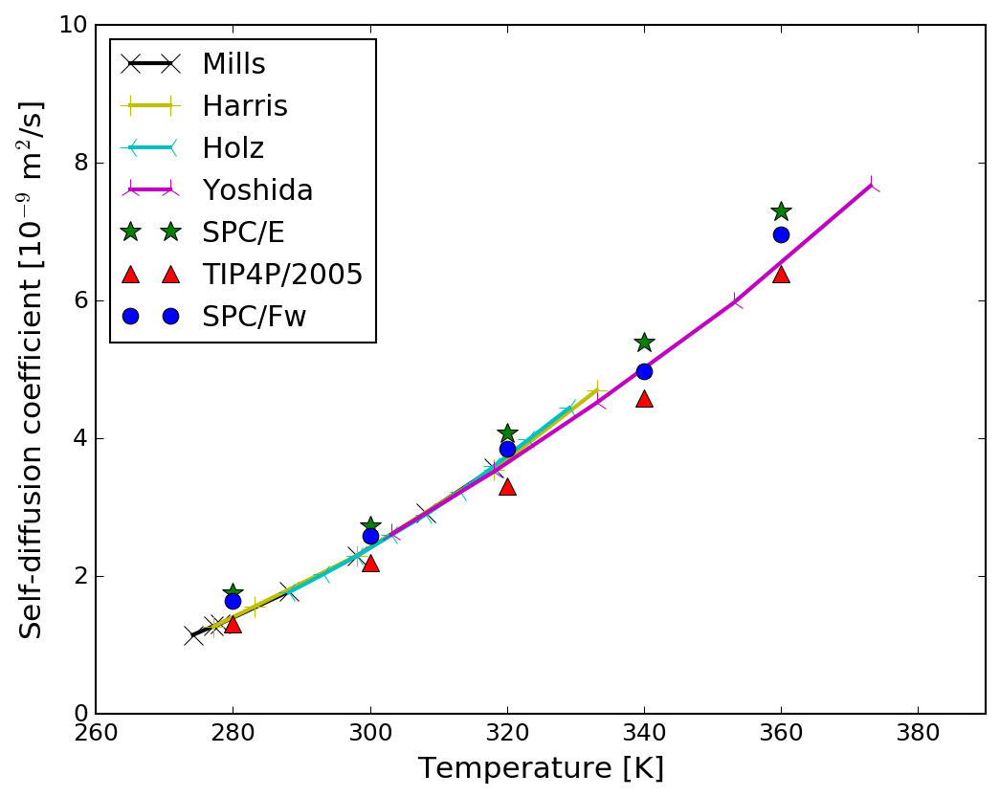
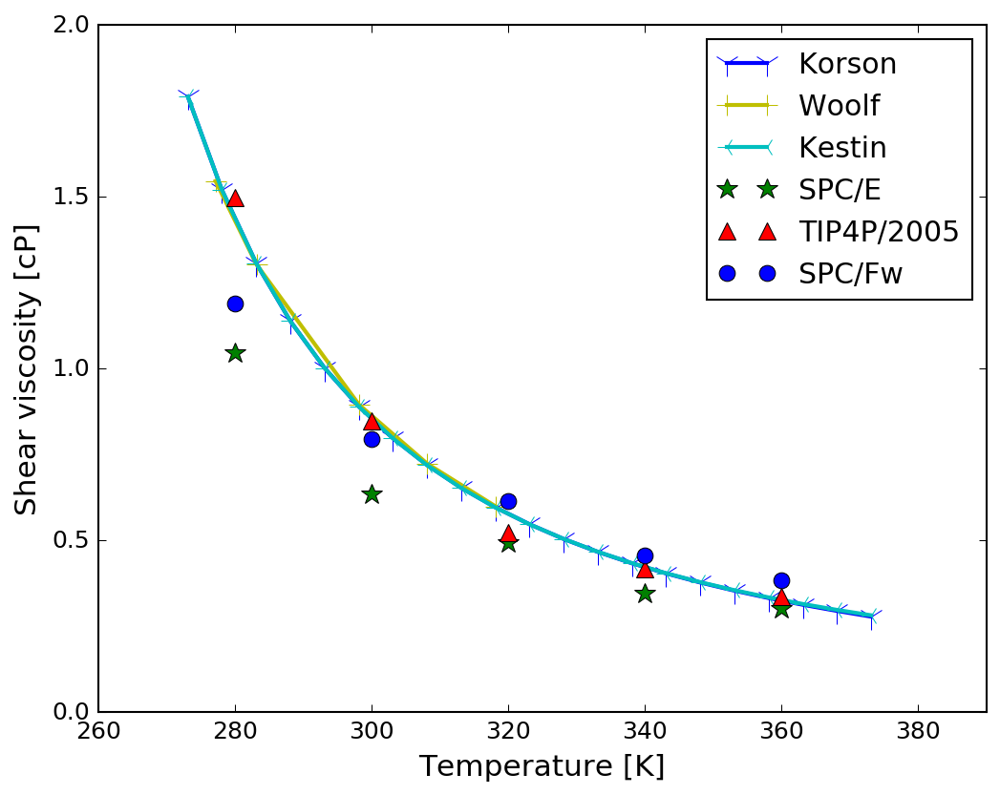

Molecular Dynamics (MD)
Transport Properties
Transport coefficients describe the material properties of a fluid within the framework of continuum fluid dynamics, such as diffusion coefficient, shear viscosity, bulk viscosity, and thermal conductivity.
Transport properties can be determined by equilibrium method, including Green-Kubo formalism (Ref: Green, 1954, J. Chem. Phys.; Kubo, 1957, J. Phys. Soc. Jpn.).
The water molecule models adopted are SPC/E (Ref: Berendsen et al., 1987, J. Chem. Phys.) TIP4P/2005 (Ref: Abascal and Vega, 2005, J. Chem. Phys.); SPC/Fw (Ref: Wu et al., 2006, J. Chem. Phys.).
- Diffusion coefficient: the spontaneous mixing species when the chemical potential or concentration gradient equals zero. Einstein expression gives $D=\lim_{t \to \infty}\frac{1}{6N_{m}t}\langle \sum_{j=1}^{N_{m}}[\mathbf{r}_{j}(t)-\mathbf{r}_{j}(0)]^{2} \rangle$. For a finite system, $t$ can NOT become too large because the allowed displacements are bounded. Eventually this asymptotic result will break down, so that after reaching a plateau $D$ will begin to drop to zero. The alternative Green-Kubo expression for $D$ is based on integrated velocity autocorrelation function (VAF) $D=\frac{1}{3N_{m}}\int_{0}^{\infty}\langle \sum_{j=1}^{N_{m}}\mathbf{v}_{j}(t)\cdot \mathbf{v}_{j}(0) \rangle dt$. 
- Shear viscosity: a measure of fluid's resistance to gradual deformation by shear stress. Einstein expression gives $\eta = \lim_{t \to \infty}\frac{1}{6TVt}\langle \sum_{x \lt y}[\sum_{j}m_{j}r_{jx}(t)v_{jy}(t)-\sum_{j}m_{j}r_{jx}(0)v_{jy}(0)]^{2} \rangle$, where $\sum_{x \lt y}$ denotes a sum over the three pairs of distinct vector components ($xy$, $yz$, and $zx$) used to improve the statistics. However, this expression turns out to be unusable with periodic boundaries due to the violation of translational invariance. The alternative Green-Kubo expression for $\eta$ is based on integrated autocorrelation function of the pressure tensor $\eta=\frac{V}{3T}\int_{0}^{\infty}\langle \sum_{x \lt y}P_{xy}(t)P_{xy}(0) \rangle dt$, where $P_{xy}=\frac{1}{V}[\sum_{j}m_{j}v_{jx}v_{jy}+\frac{1}{2}\sum_{i \ne j}r_{ijx}f_{ijy} ]$ is a component of the pressure tensor. 
- Thermal conductivity: Einstein expression gives $\lambda=\lim_{t\to \infty}\frac{1}{6T^{2}Vt}\langle \sum_{x}[\sum_{j}r_{jx}(t)e_{j}(t)-\sum_{j}r_{jx}(0)e_{j}(0)]^{2} \rangle$, where $e_{j}=\frac{1}{2}m\mathbf{v}_{j}^{2}+\frac{1}{2}\sum_{i\ne j}u(r_{ij})-\langle e \rangle$. The alternative Green-Kubo expression for $\lambda$ is based on integrated heat flux autocorrelation function $\lambda=\frac{V}{3T^{2}}\int_{0}^{\infty}\langle \mathbf{S}(t)\cdot \mathbf{S}(0) \rangle dt$, where $\mathbf{S}=\frac{1}{V}[\sum_{j}e_{j}\mathbf{v}_{j}+\frac{1}{2}\sum_{i \ne j}\mathbf{r}_{ij}(\mathbf{f}_{ij}\cdot \mathbf{v}_{j})]$.